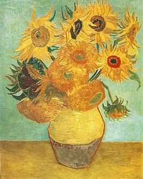
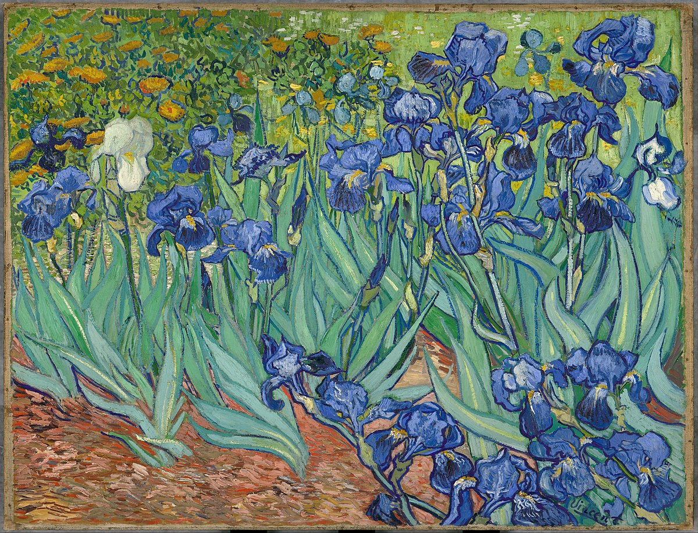
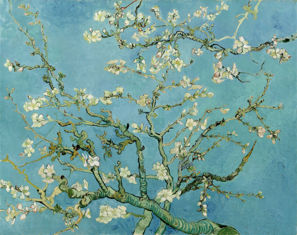
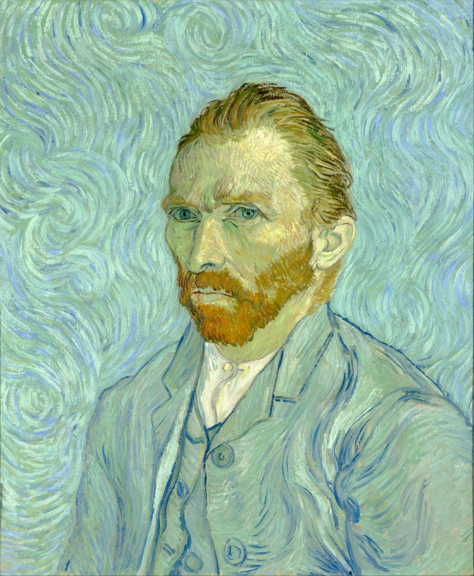
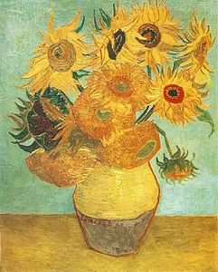
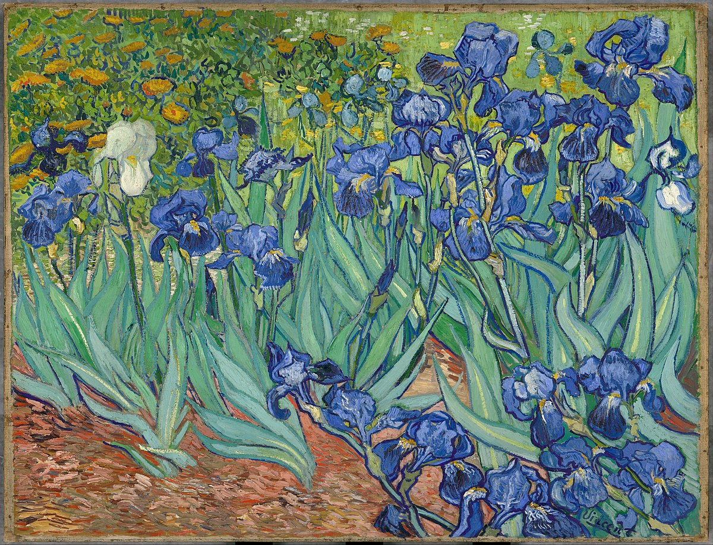
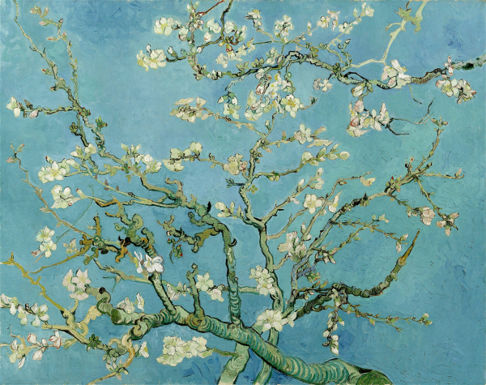
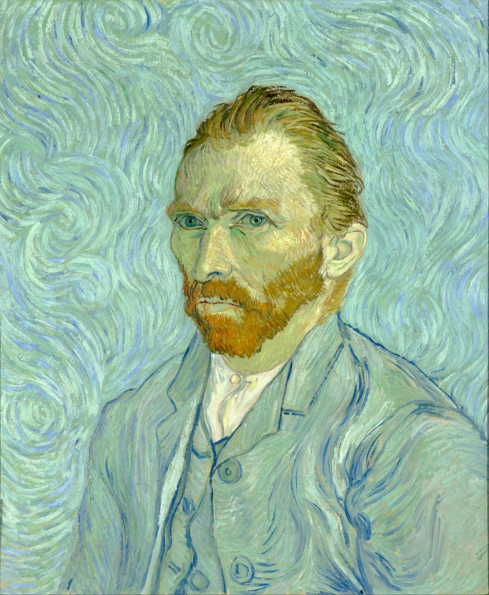

¿Quién fue Vincent Van Gogh?
Van Gogh nació en 1853 y creció en Holanda. Fue criado en una familia religiosa con su padre siendo un ministro. Cuando terminó sus estudios, Vincent siguió la profesión de su tío y se convirtió en un comerciante de arte aprendiendo el comercio en Holanda y luego trabajando en Inglaterra y Francia. Vincent tuvo éxito e inicialmente fue contento con su trabajo. Sin embargo, pronto se cansó de la empresa de arte, especialmente en París, y perdió interés en el comercio. Después de regresar a casa, Vincent comenzó estudiar teología. Si bien muy apasionado y entusiastico, él falló los exámenes para entrar en un par de programas. Característico de su personalidad, era inteligente, capaz de hablar varios idiomas, pero él no creía que el latín era una lengua para predicar a los pobres. Durante este período, trabajó como misionero en una comunidad minera de carbon viviendo con los pobres trabajadores gente comúnes. A medida que su desarrollo como un predicador estaba estancando, su interés a aquellos alrededor de él aumentaba. Su vida como artista comenzaba.
Unos 900 cuadros, más de 1600 dibujos… Y eso que Van Gogh empezó su carrera seria de pintor relativamente tarde (32 años). Eso sí… Desde entonces no pararía de pintar a un ritmo frenético durante 5 años, hasta su trágica muerte. Mucho se ha hablado de su turbulenta vida y de su locura, de la famosa oreja y de su carácter intratable. Sin embargo, y por mucho que se especule, su arte era de lo más lúcido. Van Gogh no pintaba así por «estar loco», no veía las cosas así (eso sería genial!) sino que fue un audaz experimentador y todo un erudito en la historia del arte.
Paradigma de pintor atormentado, de genio solitario que no vendió ni un miserable cuadro en vida (hoy su obra tiene un valor incalculable), es verdad que tenía serios trastornos psiquiátricos, pero lo cierto es que fue un pintor muy de su tiempo, que evolucionó de la monocromía típica de la pintura holandesa y del realismo de sus ídolos Millet o Rembrandt, al arte colorido con el que lo identificamos hoy en día, pasando por el inevitable influjo del impresionismo.
Un resumen de la vida de Vincent Van Gogh
Sus obras más famosas
- Noche estrellada (1889)
- Los girasoles (1888)
- Lirios (1889)
- Almendro en flor (1890)
- Autorretato (1889)
 







Otros pintores famosos
| Pintor | Conoce más | |
|---|---|---|
| Pablo Picasso | La mujer que llora (1937). La vida(1909). El sueño(1932). | Biografía |
| Leonardo da Vinci | La última cena (1498). Hombre de vitruvio. Monna Lisa. | Biografía |
| Salvador Dalí | La metamorfosis de narciso (1937). La persistencia de la memoria (1931). La tentación de San Antonio (1946). | |